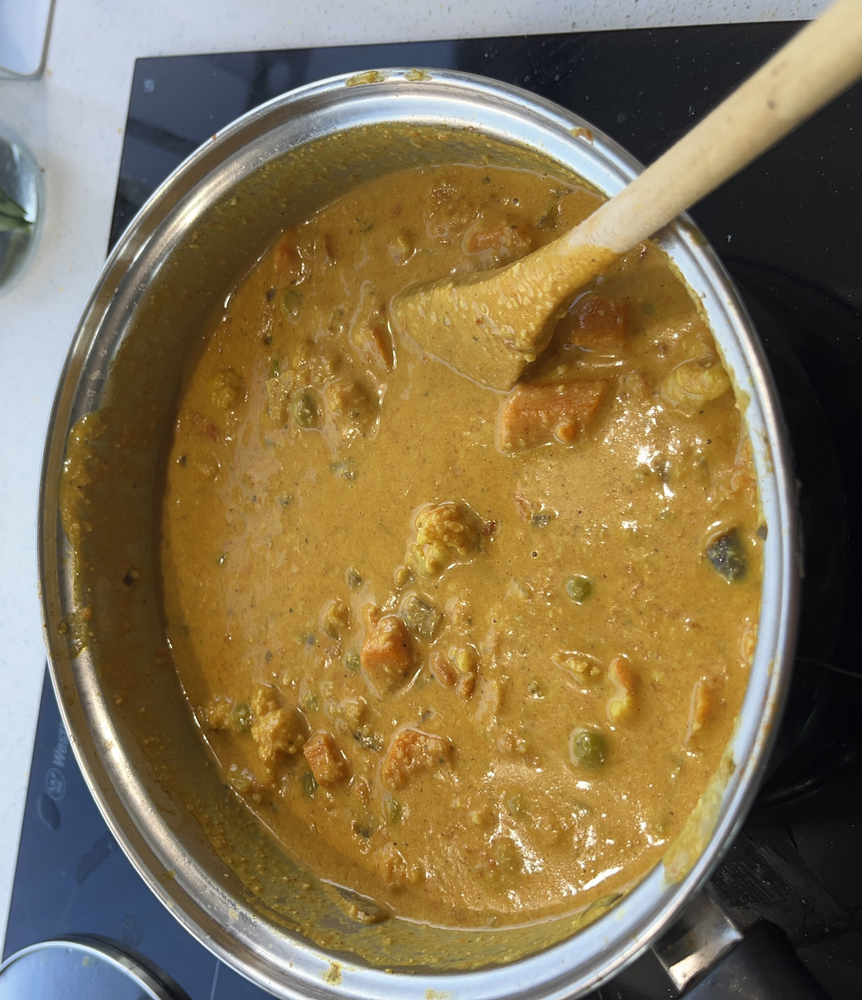

Vege Korma

somecashewssomewater
Blend cashews, add water, blend again to make paste and set aside.
someSweet PotatosomeCarrotssomePeassomeCauliflower
Pre-boil some vegetables. Sweet Potato, Carrots Peas, Cauliflower
someoilsomebuttersomecuminsomeonionsomebrown sugar
Heat oil and butter in pan. Add cumin and a diced onion and little bit of brown sugar and saute.
somegarlicsomegingersomediced tomatoes
Stir in garlic, ginger, and a can of diced tomatoes.
somecoriandersometurmericsomegaram masalasomechilli powdersomecinnamon
Add coriander, turmeric, garam masala, chilli powder, cinnamon.
somecoconut milksomeyogurt
Add in the veggies, cashew paste and can of coconut milk, and yogurt.
Simmer until thickened.
Serve with rice and naan.